小禾后台 · Web 管理端打磨版（unslop）
左边是交互方案里的原稿（docs/ITER1/ui/drafts/web-管理端-方案.html，8 个小窗），右边是按 1440 × 900 桌面比例重画的打磨版。只用了打磨模式：流程、菜单 8 项 3 组、文案和数据都按方案，主色 #3F6EE8、冷灰底、系统字体和 App 打磨版一致。方向：稳妥、利落，像一张值班表，打开就知道先做哪件。标志细节是底部的“系统状态行”，只出现在首页。
原稿 · ① 向导第 1 步：配模型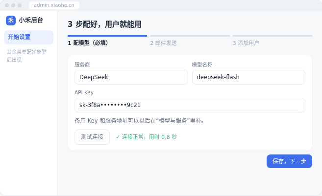
打磨版 · 打开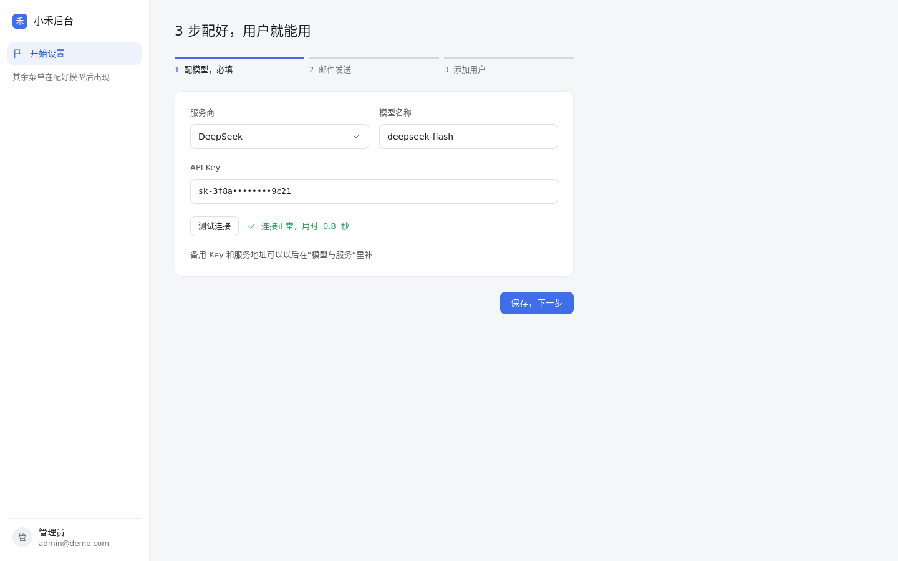
改了什么
- 小窗改成真实后台比例：左侧菜单 240，内容区表单最宽 640
- 步骤条：当前步主色，“必填”并进步骤名，不再用括号
- API Key 用等宽字；“✓ 连接正常”换成线框勾图标
- 说明文字移到测试连接下面，读完再点保存
原稿 · ② 向导第 3 步：添加用户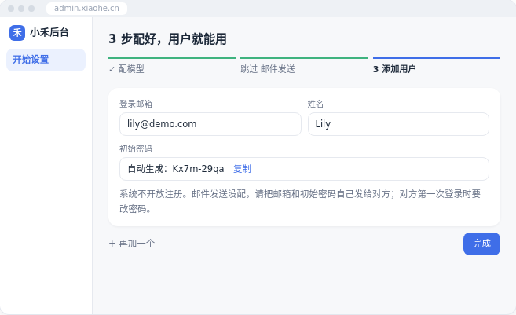
打磨版 · 打开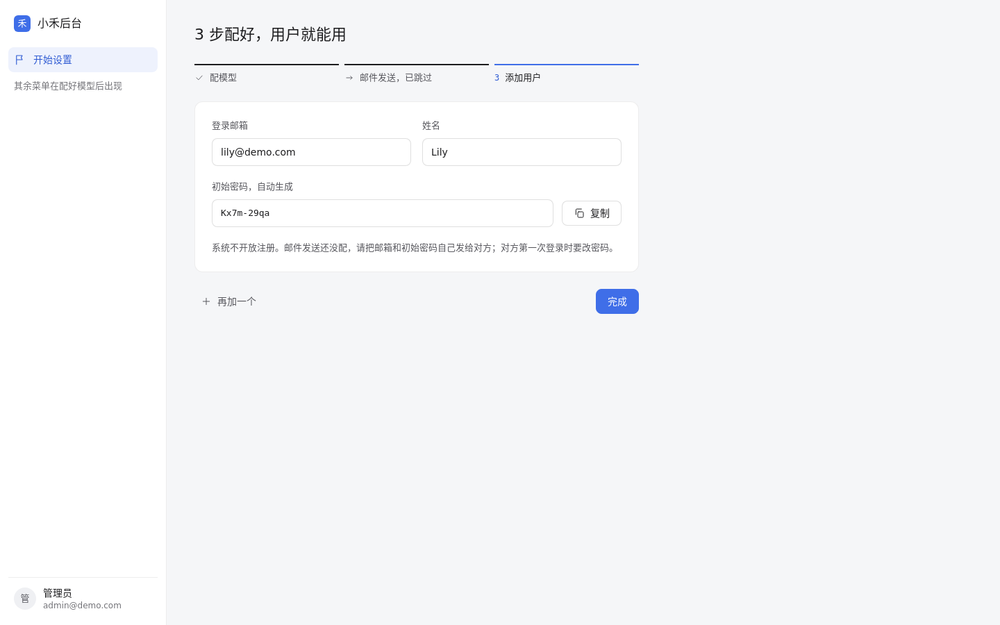
改了什么
- 已完成的步骤线改成主文字色，跳过的步骤写“邮件发送，已跳过”，不再是绿色
- “复制”从输入框里的蓝字改成旁边独立按钮
- “+ 再加一个”改成带图标的文字按钮，和“完成”分在两端
原稿 · ③ 首页：要你处理 3 件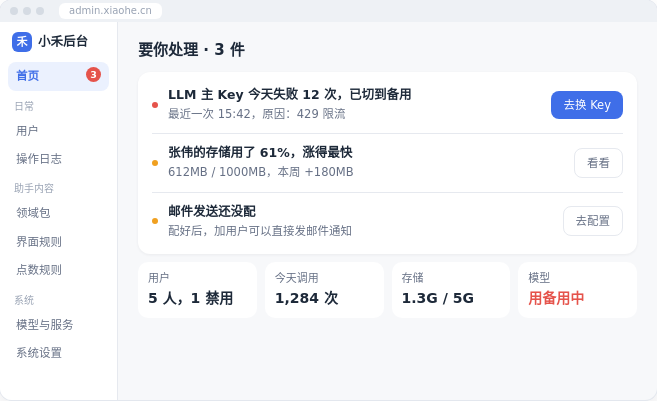
打磨版 · 打开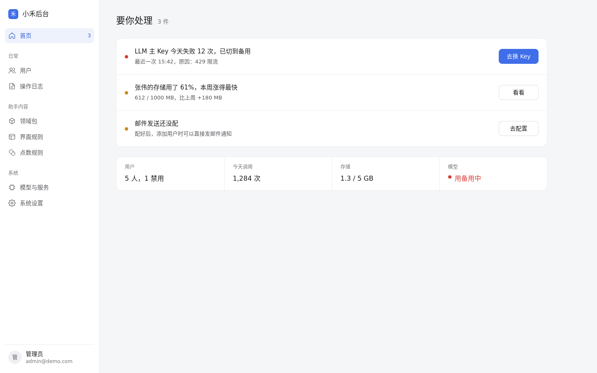
改了什么
- 菜单上的红色数字圆点改成安静的计数，红色只留给真正出错的那一件
- 标题“要你处理 · 3 件”拆成标题 + 计数
- 每件事的按钮同宽，主按钮只给最急的“去换 Key”
- 底部 4 格状态并成一条状态行，模型异常用红点 + 红字，其余中性色
- 存储写成“1.3 / 5 GB”，单位统一
原稿 · ④ 处理完：都处理好了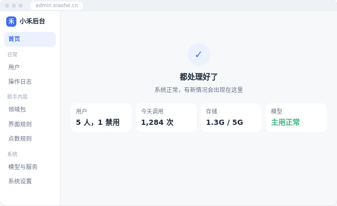
打磨版 · 打开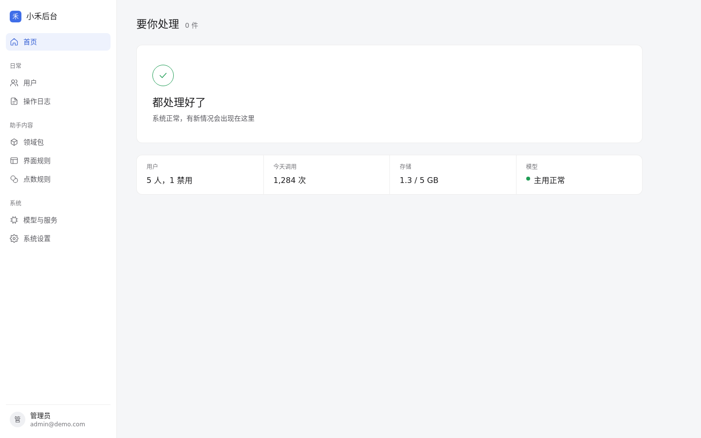
改了什么
- 居中的浅蓝底大勾，换成和 App 结束页同款的 44px 描边勾，靠左对齐
- 标题仍是“要你处理”，计数变成 0 件，页面结构不跳
- 状态行和上一屏同一位置，模型变成绿点“主用正常”
原稿 · ⑤ 用户列表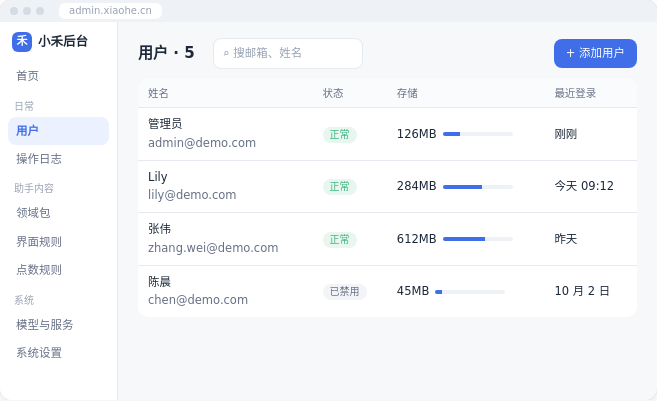
打磨版 · 打开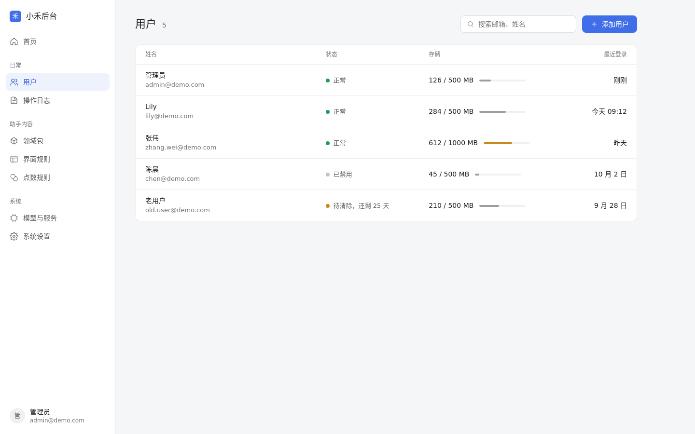
改了什么
- 状态胶囊换成“圆点 + 文字”；补上演示数据里已有的“老用户（待清除）”
- 存储写成“已用 / 配额”，进度条用中性灰，只有涨得快的张伟用琥珀色
- 搜索框占位“⌕ 搜邮箱、姓名”改成线框图标 + “搜索邮箱、姓名”
- 行高统一 64，最近登录右对齐
原稿 · ⑥ 点一行：右侧面板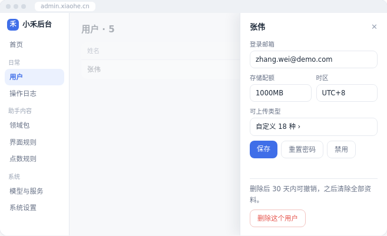
打磨版 · 打开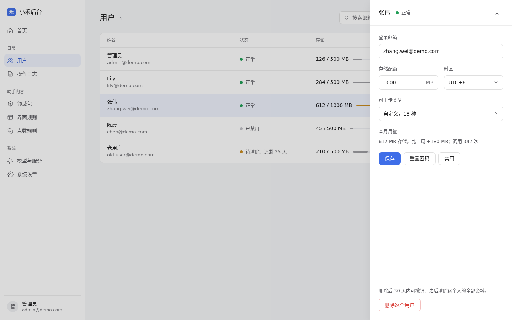
改了什么
- 面板 400 宽，背后的列表保留并加浅遮罩，选中行用浅主色底
- 标题旁加状态；“✕”换成线框图标按钮
- 按方案“用量合进这里”，加一行本月用量
- 删除区单独分隔在底部，后果说明在按钮上方
原稿 · ⑦ 领域包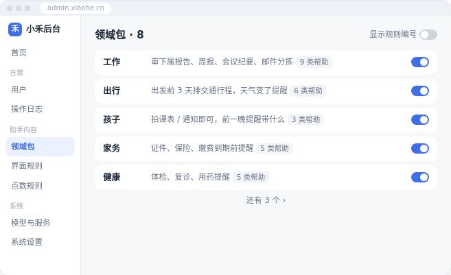
打磨版 · 打开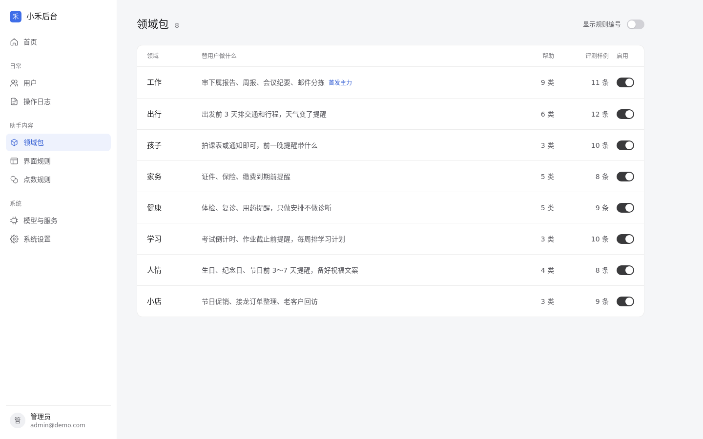
改了什么
- 8 个领域全部列出，去掉“还有 3 个 ›”；后 3 个的说明取自 v6 领域包数据
- “9 类帮助”灰色小块改成独立的数字列，加上评测样例数（页面结构 W-09 要求的列）
- 工作标“首发主力”，用主色小字，不做胶囊
- 开关从 8 个蓝色改成深灰：一屏 8 个主色开关会抢走所有注意力
原稿 · ⑧ 模型与服务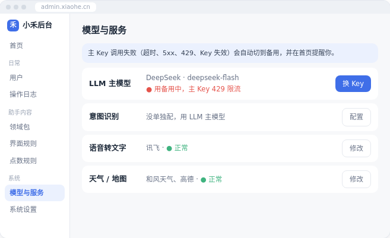
打磨版 · 打开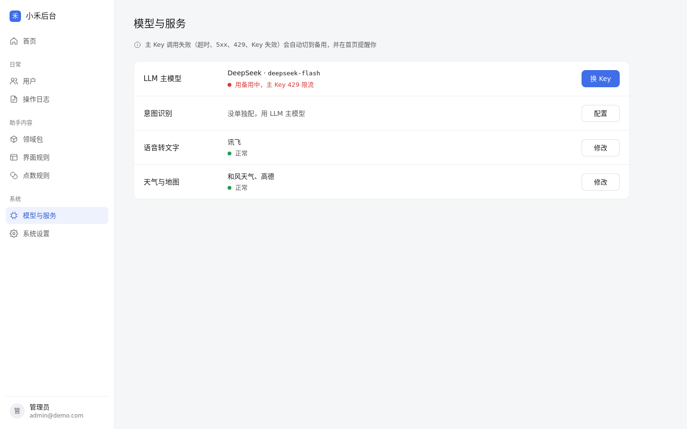
改了什么
- 浅蓝提示条改成一行带信息图标的说明，不再占一块彩色底
- 四项做成同一张卡里的四行，名称、状态、按钮各成一列
- 状态用“圆点 + 文字”放在服务商下面；“天气 / 地图”改成“天气与地图”
全局：字号收成 12 / 13 / 14 / 16 / 22，字重 400 / 500；间距都是 4 的倍数；菜单行高 36、分组标题上 24 下 8；8 屏共用一套左侧菜单（shell.js），图标统一为 1.5 描边的线框图标；不用 emoji、渐变和彩色阴影。只是静态草图，不能点击。
按 unslop by @heydamir（CC BY 4.0）流程完成